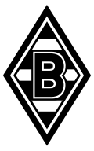

Diks gewinnt mit Indonesien den Fifa Asean Cup, Itakura den Kirin Cup
Gladbachs Verteidiger Kevin Diks hat als Kapitän Indonesiens den erstmals ausgetragenen Fifa Asean Cup gewonnen. Im Finale in Jakarta setzte sich der Gastgeber gegen Thailand im Elfmeterschießen mit 4:2 durch. Auch Borussias Ko Itakura feierte mit Japan einen Turniersieg.
Für Indonesien war es der erste Sieg bei einem offiziellen Fifa-Turnier. Der 30-jährige Diks stand in allen Spielen über die komplette Spielzeit auf dem Platz. Im abschließenden Gruppenspiel steuerte er beim 9:2 gegen Bangladesch einen Treffer bei.
Das Finale fand vor 70.000 Fans im Gelora Bung Karno Stadium statt. Kurz vor dem Ende der regulären Spielzeit geriet Thailand nach einem Platzverweis in Unterzahl. Durch den folgenden Freistoß lag es zudem zurück. Thailand glich aus, ging in der Verlängerung in Führung und kassierte wenige Minuten vor dem Ende den Ausgleich.
Vom Punkt war es zuletzt nicht rund gelaufen für Diks. Im bislang letzten Bundesligaspiel beim 3:4 gegen Mainz 05 setzte der etatmäßige Schütze einen Strafstoß an den Pfosten. Den zweiten Elfmeter überließ ihm Shuto Machino dann nicht. Im ersten Gruppenspiel gegen Singapur hatte Ole Romeny bei einem Strafstoß den Vorzug erhalten. Im Elfmeterschießen des Finals trat Diks als Erster an und verwandelte.
Itakura gewann mit Japan durch ein 2:1 gegen Neuseeland den Kirin Cup. Im Finale gehörte er nicht zum Spieltagskader, im Halbfinale gegen Ecuador hatte er noch durchgespielt. Insgesamt kam er in zwei der vier Länderspiele während der Bundesligapause zum Einsatz.
Am Sonntag tritt Gladbach im Derby beim 1. FC Köln an. Diks kehrt mit 390 Turnierminuten in den Beinen zurück. Die Borussen hoffen, dass auch Itakura fit aus Japan zurückkehrt.